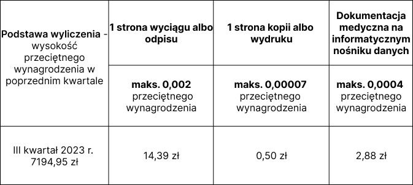

Udostepnienie dokumentacji medycznej to jedno z najczęściej
opisywanych zagadnień związanych z ochroną danych w Placówkach
Medycznych. Na ten temat powstało już wiele opracowań, jednak
problematyka ta, wciąż stanowi temat interesujący i wymagający
naszej uwagi.
Żądanie pacjenta udostępnienia mu dokumentacji medyczne stanowi
jego podstawowe uprawnienie określone przepisami prawa. Z tym
uprawnieniem dla Placówki Medycznej, wiąże się jednak jeden z
podstawowych jej obowiązków, określonych w Rozporządzeniu Ministra
Zdrowia z dnia 6 kwietnia 2020 r. w sprawie rodzajów, zakresu i
wzorów dokumentacji medycznej oraz sposobu jej przetwarzania.
Czy każdy podmiot jest obowiązany do prowadzenia DM?
Prowadzenie dokumentacji medycznej jest to obowiązek każdej Placówki i
nie ma tu znaczenia czy jest to placówka prywatna czy publiczna, czy
jest to mały gabinet lekarski czy sieć przychodni. Każdy podmiot,
który udziela świadczeń zdrowotnych obowiązany jest dokumentacje
medyczną prowadzić a na żądanie pacjenta ją udostępnić. Wydanie kopi
dokumentacji medycznej pacjentowi należy odróżnić od udzielenia mu
informacji i wydani kopi jego danych osobowych. Udostepnienie
dokumentacji medycznej i realizacja prawa osoby fizycznej do
pozyskiwania kopii jej danych osobowych opierają się o dwa odrębne
podstawy prawne przepisy ustawy o prawach pacjenta (art.27 UPP) i
Rzeczniku Praw Pacjenta i rozporządzenia RODO (art.15 RODO).
Pacjent ma prawo do dostępu do dokumentacji medycznej dotyczącej
jego stanu zdrowia oraz udzielonych mu świadczeń zdrowotnych. *art.
23 ust. 1 ustawy o prawach pacjenta i Rzeczniku Praw Pacjenta
Pamiętać należy także, że Placówka ma obowiązek udostępnić
dokumentację medyczną nie tylko swoim aktywnym pacjentom, ale również
i tym którzy kiedyś korzystali z naszych świadczeń oraz tych którzy
chcą skorzystać z usług innej Placówki. Obowiązek Placówki Medycznej
dotyczący przechowywania i udostępniania dokumentacji medycznej trwa
przez czas określony przepisami ustawy o prawach pacjenta, generalnie
20 lat, licząc od końca roku kalendarzowego, w którym dokonano
ostatniego wpisu.
Sposób udostępnienia DM
Pacjent, chcący skorzystać z przysługującego mu prawa do udostepnienia
mu dokumentacji medycznej, powinien złożyć w tym zakresie stosowny
wniosek do podmiotu udzielającego świadczeń zdrowotnych. Wniosek ten,
nie ma określonej formy, zatem może być złożony pisemnie, ustnie bądź
za pośrednictwem środków komunikacji elektronicznej. Skuteczność
złożenia przedmiotowego wniosku nie może być także uzależnione od
wskazania przez pacjenta celu jej udostępnienia.
Udostępnienie dokumentacji medycznej jest możliwe poprzez:
-
udostepnienie jej do wglądu, w miejscu udzielania świadczeń
zdrowotnych albo w siedzibie podmiotu udzielającego świadczeń
zdrowotnych, z zapewnieniem możliwości sporządzenia notatek lub
zdjęć, jeśli prowadzimy dokumentację w formie elektronicznej
udostępnienie do wglądu dotyczy także baz danych w zakresie ochrony
zdrowia,
-
przez sporządzenie jej wyciągu, odpisu,
kopii lub wydruku,
- za pośrednictwem środków komunikacji elektronicznej,
- na informatycznym nośniku danych.
Co kryje się pod wskazanymi pojęciami? :
-
kopia - to dokument wytworzony przez odwzorowanie
oryginału dokumentacji medycznej, w formie kserokopii albo
odwzorowania cyfrowego (skanu),
-
wyciąg - to skrótowy dokument zawierający wybrane
informacje lub dane z całości dokumentacji medycznej,
-
odpis - to dokument wytworzony przez przepisanie tekstu z
oryginału dokumentacji medycznej z wiernym zachowaniem zgodności
co do treści z oryginałem.
Oryginał dokumentacji medycznej, Placówka ma obowiązek udostępnić
jedynie na żądanie uprawnionych do tego podmiotów. Wówczas
dokumentacje udostępniamy przez wydanie oryginału za potwierdzeniem
odbioru i z zastrzeżeniem zwrotu po wykorzystaniu, na żądanie organów
władzy publicznej albo sądów powszechnych.
Jeśli prowadzimy dokumentację w formie papierowej, możemy udostępnić
ją (jeśli takie jest żądanie pacjenta) w postaci kopii w formie
odwzorowania cyfrowego (skanu) za pośrednictwem korespondencji e-mail
lub zgrywając dokumentację na nośniki typu pendrive lub płyta CD.
Odpłatność??
Udostępnienie dokumentacji do wglądu w miejscu udzielania świadczeń
lub siedzibie Placówki jest bezpłatne. Pierwszy wyciąg,
odpis, kopia lub wydruk oraz sporządzenie kopii w formie odwzorowania
cyfrowego (skanu) na informatycznym nośniku danych, dokumentacji
medycznej musi być udostępniana pacjentowi przez bezpłatnie .
Kolejne udostępnienie dokumentacji medycznej temu samemu pacjentowi,
jeśli obejmuje ono ten sam zakres lub sposób udostępnienia (tj.
ponowne sporządzenie wyciągu, odpisu, kopii, wydruku, czy skanu na
informatycznym nośniku) danych może być odpłatne.
Obowiązek prowadzenia wykazu zawierającego informacje dotyczące
udostępnianej dokumentacji medycznej wynika z art. 27 ust. 4 UPP
Udostępnienie dokumentacji medycznej jest także
nieodpłatne m.in. w związku z postępowaniem w sprawie
przyznania świadczenia kompensacyjnego prowadzonym przez Rzecznika
Praw Pacjenta czy w związku z postępowaniem przed wojewódzką komisją
do spraw orzekania o zdarzeniach medycznych.
Odpłatność jest regulowana w odniesieniu do publikowanej przez prezesa
Głównego Urzędu Statystycznego wysokości przeciętnego wynagrodzenia w
poprzednim kwartale danego roku.
Dlatego też warto w tym miejscu podkreślić istotność i przydatność
prowadzonego rejestru udostepnienia dokumentacji medycznej, co
umożliwi kontrolowanie zakresów i sposobów bezpłatnie już wydawanych
dokumentacji.
Informacje o wysokości opłaty podaje się do wiadomości pacjentów.
Najlepszym sposobem na przedstawienie tej informacji jest jej
wywieszenie w widoczny sposób w Placówce i na stronie internetowej
podmiotu wykonującego działalność leczniczą. Jeśli Placówka ma
obowiązek umieszczania danych w BIP, informacja ta powinna wówczas
znaleźć się również na stronie BIP.
Maksymalne opłaty za udostępnienie dokumentacji medycznej w okresie
01.12.2023 - 29.02.2024

Kiedy można odmówić udostepnienia DM?
Co do zasady nie można odmówić pacjentowi udostepnienia dokumentacji
medycznej. Będzie to mogło mieć miejsce jedynie w nadzwyczajnych
wypadkach np. gdy nie będziemy w posiadaniu przedmiotowej
dokumentacji, ponieważ uległa ona zniszczeniu bądź zaginęła, staliśmy
się ofiarą ataku hackerskiego i utraciliśmy czasowo dostęp do
dokumentacji a nie wykonywaliśmy kopii zapasowej.
Oczywiście sytuacje te nie powinny mieć miejsca, po to Placówka
Medyczna wdraża odpowiednie zabezpieczenia techniczne oraz
organizacyjne, aby uniknąć właśnie takich naruszeń.
Oczywiście udostepnienie dokumentacji medycznej wiąże się z
koniecznością upewnienia się pracownika Placówki, czy osoba
występująca ze stosownym wnioskiem jest do tego umocowana, tj. czy
z wnioskiem zwraca się pacjent, którego dokumentacja dotyczy
(zweryfikowano tożsamość pacjenta), przedstawiciel ustawowy
pacjenta (rodzic) czy osoba upoważniona przez pacjenta.
Jeżeli jednak zmuszeni jesteśmy odmówić udostepnienie dokumentacji
medycznej, zawsze powinniśmy odnotować ten fakt w formie pisemnej
(elektronicznej lub papierowej) informując pacjenta o przyczynie
odmowy.
Placówka Medyczna ma obowiązek zweryfikować tożsamość pacjenta.
Dokumentem potwierdzającym tożsamość może być:
⦁ dowód osobisty,
⦁paszport,
⦁ paszport obywatela Ukrainy ze stemplem Straży Granicznej RP,
⦁ prawo jazdy,
⦁ karta pobytu,
⦁ dokument podróży
W sytuacji, gdy pacjent odmawia okazania dokumentu weryfikującego
jego tożsamość, pracownik Placówki może poprosić pacjenta o
podanie np.nr PESEL lub innego numer identyfikacyjnego ustnie lub
pisemnie (otrzymane na piśmie dane niezwłocznie po wprowadzeniu do
systemu usuwamy)
Upoważnienie
Pacjent ma prawo dostępu do swojej dokumentacji medycznej. Może być
ona również udostępniona jego przedstawicielowi ustawowemu bądź osobie
upoważnionej przez pacjenta.
Podstawowym elementem upoważnienia jest weryfikacja, czy pochodzi ono
od osoby uprawnionej tj. pacjenta, którego dotyczy wniosek, dlatego
też bardzo często Placówki Medyczne, odbierają od pacjentów
oświadczenie woli w tym przedmiocie przy pierwszej wizycie. Pracownicy
Placówki Medycznej mają wówczas pewność, że upoważnienie zostało
złożone przez pacjenta a udostepnienie danych osobie trzeciej, w taki
sposób upoważnionej nie będzie niosło za sobą ryzyka niezgodnego z
prawem działania.
Nie jest to jednak jedyna, zgodna z prawem możliwość złożenia
oświadczenia woli pacjenta w przedmiocie upoważnienia osoby trzeciej
do jego dokumentacji medycznej. Pacjent ma prawo w każdej chwili
upoważnić wskazaną przez siebie osobę do jego dokumentacji. Placówka
nie może wymagać, w przypadku przedłożenia upoważnienia w późniejszym
czasie, aby było ono potwierdzane przed notariuszem bądź posiadało
inną, szczególną formę. Wówczas pracownik Placówki medycznej będzie
działał w zaufaniu do dokumentu, który został mu przedłożony przez
osobę trzecią. Oczywiście weryfikujemy znajdujące się w nim dane
pacjenta i osoby upoważnionej, oraz jeśli wszystko zgadza się
realizujemy żądanie z upoważnienia. Takie upoważnienie przechowujemy w
aktach wydawanej dokumentacji.
Drugim podstawowym elementem upoważnienia jest wskazanie danych osoby,
która ma prawo zapoznać się z dokumentacją medyczną pacjenta czy np.
ją odebrać.